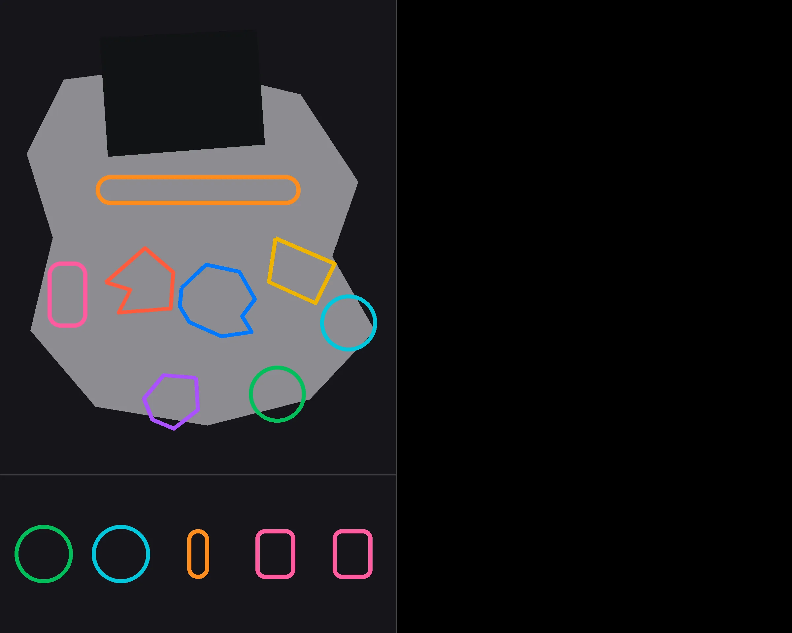
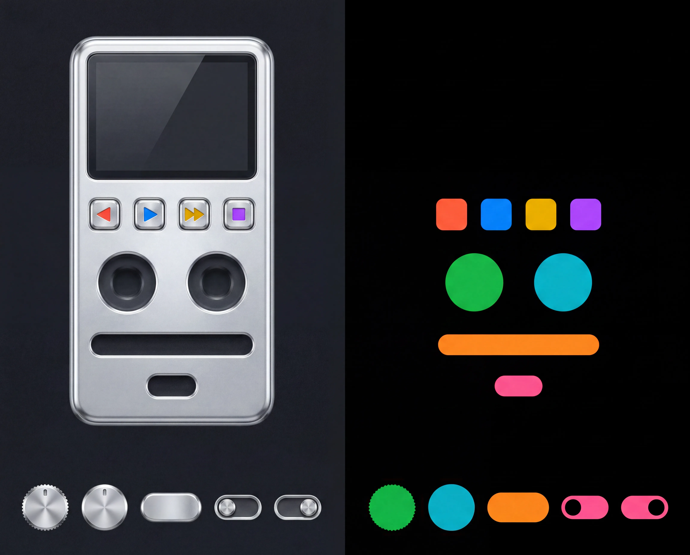
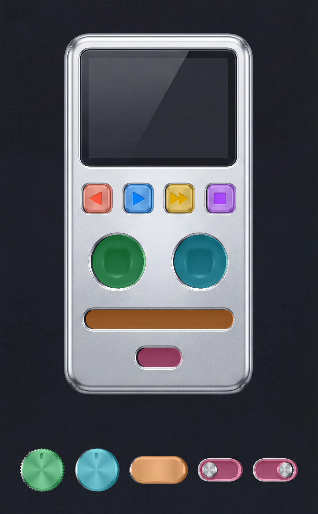

Full chain: template → paint → mask → cut & placed → live
The whole pipeline in one view. The painted device + sprite sheet are the raw Gemini file; the mask gives every socket + cell; the sprites are cut from the sheet (keyed off the dark backdrop) and seated into their sockets here in your browser, then made interactive — drag the knobs (pinned specular), drag the seek thumb, flip the toggle (its two painted states), press the buttons. Toggle the template guides to see how far the model drifted from the authored layout.
1 · template

→
2 · painted (raw Gemini file)

→
3 · mask overlay

→
4 · cut & placed →
live device ↓
loading…
the mask overlay is the raw model output — it includes the model's ~0.5% rightward drift (visible if you look closely). Sprite/button placement does not use it raw: each region is snapped onto the painted control, which cancels the drift (residual ≈0.05%).
What's live
volume knob — drag ↕, rotates under a pinned specular · 100%
balance knob — drag ↕ · 100%
seek thumb — drag ↔ · 0%
toggle — click to flip (two painted states) · off
prev · play · next · stop — press (darkens)
Alignment — the mask sits on the paint
≈ 0.5–2%mask → skin — how far the mask blob is from the actual painted control. Near-zero: the mask is a near-perfect locator (exactly what you see).
The table below is a different number — template → mask: how far the model moved each control from where I authored it in the blueprint. It's big (~26%) because the model rearranges the layout freely — that's wanted, and it's why placement reads the mask, not the template. It is NOT a placement error.
| control | model rearrangement (template→mask) |
|---|
—avg model rearrangement (% of device width) — expected, not error
Sprites are cut client-side from the raw paint (dark-backdrop key) and placed by the mask — the same data a runtime would use. Knob art is the real painted cap; the specular is a fixed overlay that doesn't rotate.